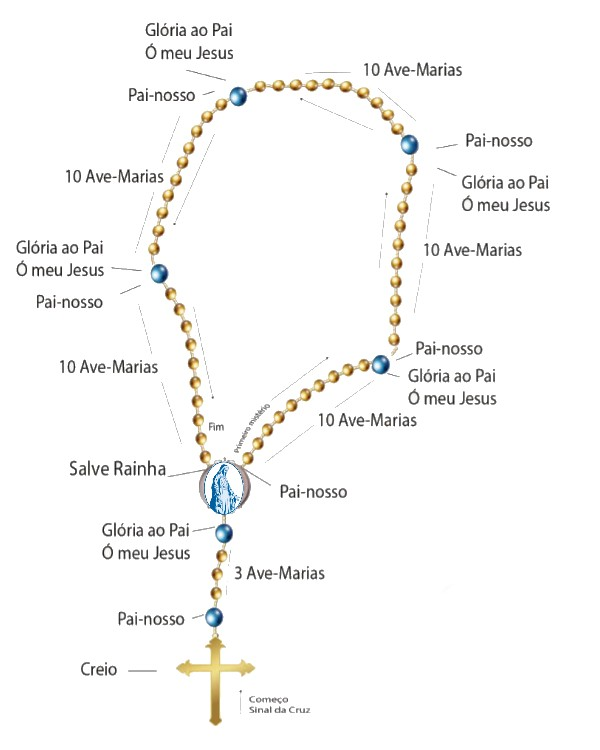

Preparamos este conteúdo para que você saiba como rezar o terço!
Aqui você tem um passo a passo para a oração do terço, uma imagem ilustrada, as orações necessárias e todos os mistérios do terço. Confira e reze conosco!
Aqui abaixo, colocamos para você uma imagem ilustrativa de como rezar o terço. Com ela você conseguirá ver melhor rezar esta oração tão importante do terço.
Divino Jesus, nós Vos oferecemos este terço que vamos rezar, meditando nos mistérios da Vossa Redenção. Concedei-nos, por intercessão da Virgem Maria, Mãe de Deus e nossa Mãe, as virtudes que nos são necessárias para bem rezá-lo e a graça de ganharmos as indulgências desta santa devoção.
Em nome do Pai, do Filho e do Espírito Santo. Amem.
Creio em Deus Pai Todo-Poderoso, Criador do Céu e da Terra; e em Jesus Cristo, Seu único Filho, Nosso Senhor; Que foi concebido pelo poder do Espírito Santo. Nasceu da Virgem Maria, padeceu sob Pôncio Pilatos, foi crucificado, morto, sepultado; desceu a mansão dos mortos. Ressuscitou no terceiro dia. Subiu ao Céu, onde está sentado à direita de Deus Pai Todo-Poderoso, de onde há-de vir a julgar os vivos e os mortos. Creio no Espírito Santo, na Santa Igreja Católica, na Comunhão dos Santos, na remissão dos pecados, na ressurreição da carne, na vida eterna. Amem.
Pai nosso, que estais nos Céus, santificado seja o Vosso Nome; venha a nós o Vosso Reino, seja feita a Vossa vontade assim na terra como no Céu. O pão nosso de cada dia nos dai hoje; perdoai-nos as nossas ofensas assim como nós perdoamos a quem nos tem ofendido; e não nos deixeis cair em tentação, mas livrai-nos do mal. Amem
Ave Maria, cheia de graça, o Senhor é convosco; bendita sois Vós entre as mulheres e bendito é o fruto do Vosso ventre, Jesus. Santa Maria, Mãe de Deus, rogai por nós, pecadores, agora e na hora da nossa morte. Amem.
Glória ao Pai, ao Filho e ao Espírito Santo. Assim como era no princípio, agora e sempre, pelos séculos dos séculos. Amem
Ó meu Jesus, perdoai-nos e livrai-nos do fogo do inferno; levai as almas todas para o Céu, principalmente as que mais precisarem.
Salve, Rainha, Mãe de Misericórdia, vida, doçura e esperança nossa, Salve. A Vós bradamos, os degredados filhos de Eva. A Vós suspiramos, gemendo e chorando neste vale de lágrimas. Eia, pois, Advogada nossa, esses Vossos olhos misericordiosos a nós volvei; e depois deste desterro nos mostrai Jesus, bendito Fruto do Vosso ventre. Ó clemente, ó piedosa, ó doce sempre Virgem Maria. V. Rogai por nós, Santa Mãe de Deus, R. Para que sejamos dignos das promessas de Cristo. Amem